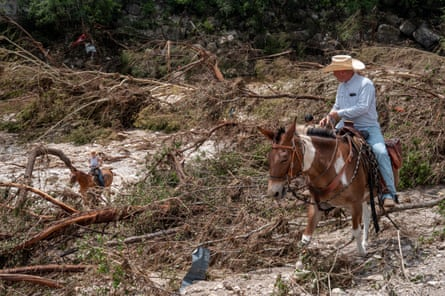
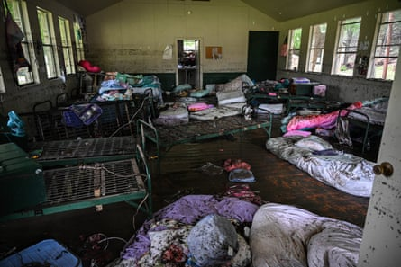
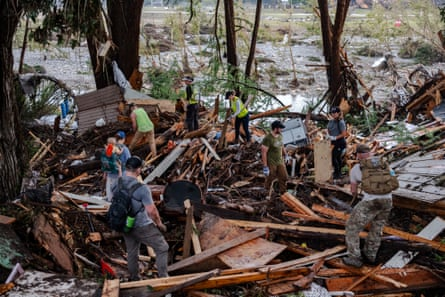
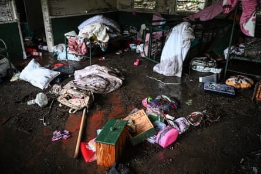

W ith more than 100 people dead, many of them children attending a Christian summer camp on the banks of the Guadalupe River, Friday’s extreme flash flooding that overwhelmed a sizeable chunk of central Texas will be recorded as one of the state’s worst ever natural disasters.
The brunt of the tragedy was felt in Kerr county, where at least 27 children and counsellors were killed after a deluge of water described by one witness as a “a pitch-black wall of death” swept through the all-girl Camp Mystic on the river’s south fork. About 750 young campers were celebrating the Fourth of July holiday.
Elsewhere in the county, authorities reported almost 50 more deaths, a number certain to rise in the coming days as the grim task of recovering bodies continues.
Alongside the human toll, torrential rain and catastrophic flooding caused near-unprecedented levels of destruction, affecting homes, businesses and vehicles. A preliminary estimate by the private weather service AccuWeather places the damage and economic loss at $18bn-$22bn (£13.2bn-£16.2bn).
“Everyone in the community is hurting,” said Dalton Rice, the city manager of Kerrville, the county seat, at a press conference on Sunday. “We are seeing bodies recovered all over, up and down.”
Search and rescue volunteers comb the land near Camp Mystic.Photograph: Brandon Bell/Getty Images
The first inkling that a disaster was imminent came in a bulletin issued by the Austin-San Antonio office of the National Weather Service at 1.18pm local time on Thursday, warning that “pockets of heavy rain are expected and may result in flooding of low-lying areas, rivers/creeks, and low water crossings”.
The message was amplified in a post to X little more than an hour later.
Shortly after midnight on Friday, the NWS was warning of “significant impacts” from torrential rain dousing counties north of San Antonio, which never let up through the early morning hours and swelled rivers and other waterways at an astonishing pace.
By 5.16am, the City of Kerrville’s police department was warning of a “life-threatening event” and urging anyone living along the Guadalupe River to immediately move to higher ground – warnings that some residents said came too late, or were not received at all.
According to meteorologists, some parts of central Texas had several months’ worth of rain in just a few hours, while gauges in the unincorporated Kerr county community of Hunt, where Camp Mystic is located, recorded 6.5in (16.5cm) of rain in only 180 minutes.
Some areas received up to 15in (38.1cm) through the day on Friday, more than a summer’s worth of rain in a single day, and reports of rainfall up to 8in (20.3cm) were widespread.
The Guadalupe River rose by 26ft (8 metres) in 45 minutes, and 33ft (10 metres) in only two hours, surpassing the level of 31.5ft (9.6 metres) from a July 1987 flood less than 20 miles (32km) east of Kerrville in which 10 teenagers from a Christian summer camp drowned after their bus stalled in flood water.
Search and rescue crews from local, state and federal agencies, using drones, boats and helicopters, were deployed at first light on Friday, as news footage began to convey the scale of the disaster.
At a briefing on Saturday, authorities said about 850 people had been rescued, with more than 400 first responders from almost two dozen agencies covering an area of over 60 miles (97 miles). The number of responders passed 1,000 by the end of the day.
The Texas national guard deployed a MQ-9 Reaper uncrewed aerial vehicle over remote spots, while personnel from the Federal Emergency Management Agency (Fema) joined emergency teams from other states in the search for survivors.
Rice, the Kerrville city manager, criticised the operation of unauthorised drones by private citizens and the news media for interfering with the rescue effort, which he said was further hampered by difficult terrain and more heavy rain.
By Sunday morning, 48 hours after the water first started to rise, and after a full day of recovering and identifying bodies while searching for those still missing, it was clear that central Texas had experienced its worst flooding event – and one of its most costly natural disasters – in decades.
The state’s governor, Greg Abbott, appeared at a press conference the day before to insist that crews would continue to consider anyone unaccounted for as alive, and called a statewide day of prayer for Sunday.
“All we know is that prayer does work,” he said, signing a request for a federal emergency declaration that the president, Donald Trump, approved on Sunday, freeing up more money and resources for recovery efforts.
Camp Mystic
The popular private Christian summer camp, which is due to celebrate its centenary in 2026, lost at least 27 campers and counsellors, it said in a post to its website. “Our hearts are broken alongside our families that are enduring this unimaginable tragedy. We are praying for them constantly,” it said.
The camp’s longtime owner and director, Richard “Dick” Eastland , was among those lost.
Dormitories on lower ground at Camp Mystic were completely overwhelmed.Photograph: Ronaldo Schemidt/AFP/Getty Images
The sprawling campsite on the bank of south fork features dormitories on lower ground that were completely overwhelmed by water. Photographs from inside one of the buildings show metal beds thrown around, as well as pink and purple sleeping bags and bedding, lunchboxes and mud-covered luggage that was abandoned as campers and staff evacuated.
About 750 girls were attending the camp, which offers more than 30 activities during three month-long terms over the summer “to provide young girls with a wholesome Christian atmosphere in which they can develop outstanding personal qualities and self-esteem”.
By Monday night, 10 campers and one counsellor were still unaccounted for. Families with ties to Camp Mystic gathered in Dallas for a vigil at the George W Bush Presidential Center.
Search and rescue workers dig through debris in Hunt, Texas.Photograph: Jim Vondruska/Getty Images
Recovery so far
Drier weather forecasts for the area from Tuesday and beyond, allied to falling river levels, offered hope that clean-up and recovery efforts can gather pace.
Some residents returned to their flood-ravaged properties on Monday to salvage what they could. Others found they had no homes to go back to, some taking refuge in a Red Cross centre in Kerrville.
Kathy Perkins told the Guardian that her trailer home was damaged by water, but some of her neighbours’ homes were swept away or moved around in the flood.
The White House announced that Trump would visit, probably on Friday, to look at the damage and announce more federal aid in terms of money and resources for Kerr county and neighbouring areas.
Another Hunt resident, Lesa Baird, 65, rode out the flood in a tree, then walked to her local Baptist church for help. “There’s no home to go to. It’s done,” she said.
By Monday night, 10 campers and one counsellor at Camp Mystic were still unaccounted for.Photograph: Ronaldo Schemidt/AFP/Getty Images
Some residents returned to their flood-ravaged properties on Monday to salvage what they could.Photograph: Brandon Bell/Getty Images